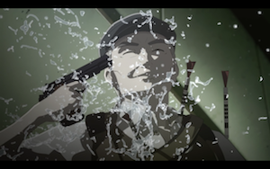

Ajin: Demi-Human
This is a sci-fi anime produced by Netflix. The show opens with the discovery by Kei that he’s an Ajin. Ajin are virtually indistinguishable from humans, even to themselves. They are revealed in death. Ajins can’t die and will come back to life.
There are 47 Ajins worldwide who are kept in captivity. They’re also experimented on by the government. Kei knows this and after his public death, begins his escape. Will the pursuit of Kei start a fight for something much bigger than his freedom?
The thing I liked the most was that there are no heroes in this show. No-one can claim a moral victory. This let you enjoy the story as people tried their best to further their own goals. The strategies that were on offer from the characters evolved. Ajin fighting had many stages. The first stage was to use tranquillisers. But the Ajin counter was to kill themselves so they wouldn’t be rendered unconscious.
Man in the Hat saves himself from capture
Intelligent, self interested characters, evolution of ideas. What could go wrong?
“If you don’t succeed we will remove you from your position” - This is the most frustrating part of a shadowy cabal. Why does this happen in every single show/book which features this? The cabal chooses a front man. When things start to go slightly wrong the front man is threatened. For some reason this makes sense? Obviously not. The cabal has clearly put them in power for merit. Maybe this is a particularly good foe? Why would the cabal remove them when things are at their hardest? However in a surprising departure from the norm the target for this threat performs better! The character suddenly starts searching for better solutions.
The animation in this show is uncanny valley. Traditionally the way to animate a conversation is to keep the frame still and redraw the mouth. In this show the whole head moves in 3 dimensions. However this suits the amoral framework on which this animation is built.
A very fun and slightly bloody show. It is available on Netflix.